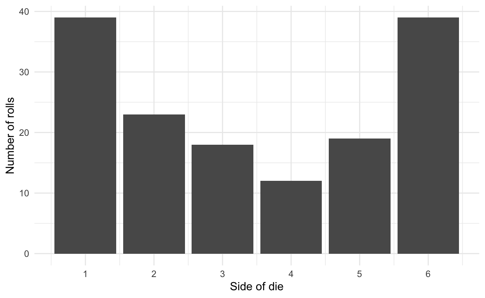
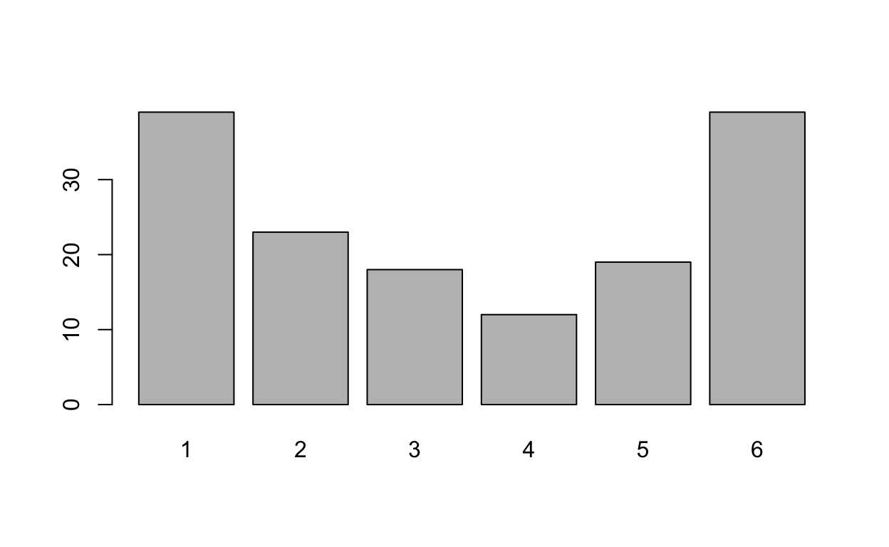
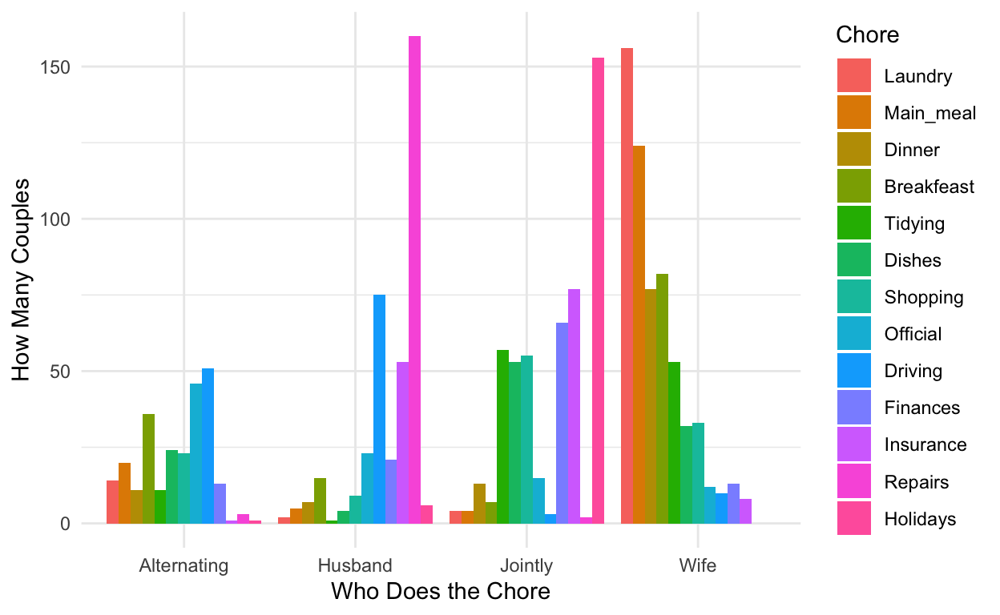
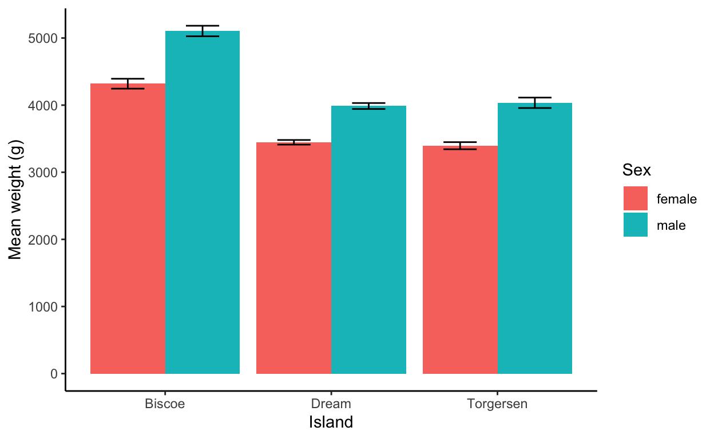
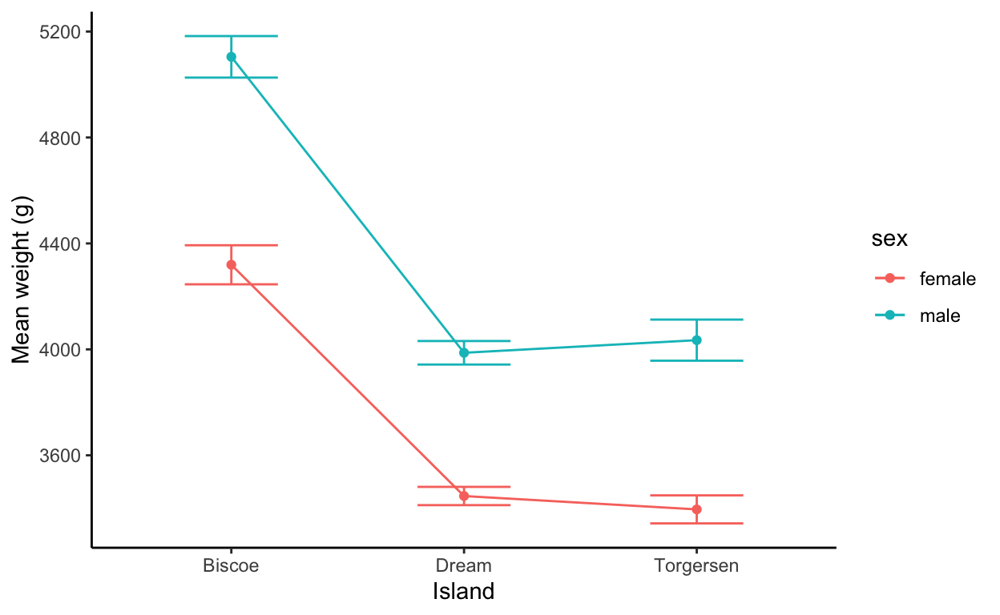

Completed exercises for the twelfth lab
This document is meant to be used to practice after you have completed the tutorial for today’s lab.
If you intend to work on these exercises while referring to the tutorial, there are instructions on the wiki on how to do so. You may also want to refer to past labs. Don’t forget that previous labs are linked to on the main labs website.
Important reminder: as with every time you open RStudio, don’t forget to load the libraries, below.
In the tutorial, we learned about using lm() and anova() for factorial ANOVA, about plotting bars against one another using geom_col() with position = position_dodge() in the parentheses, and about using the table() function with chisq.test(). In the exercises, you’ll use those to practice one of each kind of test.
As always, a version of these exercises with my answers will be posted at the end of the week to the lab website: https://faculty.bard.edu/~jdainerbest/psy-203/labslist.html
Don’t forget to (a) save and (b) knit the document frequently, so you’ll keep track of your work and also know where you run into errors.
You must load packages if you intend to use their functions. Run the following code chunk to load necessary packages for these exercises.
library(tidyverse)Imagine that we get some data on rolling a six-sided die 150 times—just run the chunk below (run all of the lines at once). You’ll have 150 numbers between 1 and 6, representing your throwing a die over and over again.
# run this whole chunk:
set.seed(42)
dicerolls <- data.frame(
rolls = sample(c(1:6), 150, replace = TRUE, prob = c(.3,.1,.1,.1,.1,.3))
)
chisq.test(table(dicerolls))
Chi-squared test for given probabilities
data: table(dicerolls)
X-squared = 26, df = 5, p-value = 8.924e-05prob argument) and see if when you set that as your p in the chi-squared test, it changes the results. Why // why not?
chisq.test(table(dicerolls), p = c(.3,.1,.1,.1,.1,.3))
Chi-squared test for given probabilities
data: table(dicerolls)
X-squared = 8.1333, df = 5, p-value = 0.149ggplot() function on the data after you’ve run group_by() (grouping by the one column in it) and %>% to summarize() to get the n() values (i.e., get the frequencies, and then use ggplot().)
dicerolls %>%
group_by(rolls) %>%
summarize(n = n()) %>%
ggplot(aes(x = rolls, y = n)) +
geom_col() +
scale_x_continuous(breaks = 1:6) +
theme_minimal() +
labs(x = "Side of die", y = "Number of rolls")
# you could also use the `barplot()` function on the `table()`:
barplot(table(dicerolls))
The data below is a “contingency table” (you don’t need to run table() since it’s already one!). It contains 13 house-tasks and their distribution in heterosexual couples: rows are the different tasks; values are the frequencies of the tasks done: by the wife only, by the husband only, by alternating partners, or together. Run the whole code chunk below:
contingency.table <- structure(list(Wife = c(156L, 124L, 77L, 82L, 53L, 32L, 33L,
12L, 10L, 13L, 8L, 0L, 0L), Alternating = c(14L, 20L, 11L, 36L,
11L, 24L, 23L, 46L, 51L, 13L, 1L, 3L, 1L), Husband = c(2L, 5L,
7L, 15L, 1L, 4L, 9L, 23L, 75L, 21L, 53L, 160L, 6L), Jointly = c(4L,
4L, 13L, 7L, 57L, 53L, 55L, 15L, 3L, 66L, 77L, 2L, 153L)), class = "data.frame", row.names = c("Laundry", "Main_meal", "Dinner", "Breakfeast", "Tidying", "Dishes", "Shopping", "Official", "Driving", "Finances", "Insurance", "Repairs", "Holidays"))
chores <- structure(list(chore = structure(c(1L, 1L, 1L, 1L, 2L, 2L, 2L,
2L, 3L, 3L, 3L, 3L, 4L, 4L, 4L, 4L, 5L, 5L, 5L, 5L, 6L, 6L, 6L,
6L, 7L, 7L, 7L, 7L, 8L, 8L, 8L, 8L, 9L, 9L, 9L, 9L, 10L, 10L,
10L, 10L, 11L, 11L, 11L, 11L, 12L, 12L, 12L, 12L, 13L, 13L, 13L,
13L), .Label = c("Laundry", "Main_meal", "Dinner", "Breakfeast",
"Tidying", "Dishes", "Shopping", "Official", "Driving", "Finances",
"Insurance", "Repairs", "Holidays"), class = "factor"), who = c("Wife",
"Husband", "Alternating", "Jointly", "Wife", "Husband", "Alternating",
"Jointly", "Wife", "Husband", "Alternating", "Jointly", "Wife",
"Husband", "Alternating", "Jointly", "Wife", "Husband", "Alternating",
"Jointly", "Wife", "Husband", "Alternating", "Jointly", "Wife",
"Husband", "Alternating", "Jointly", "Wife", "Husband", "Alternating",
"Jointly", "Wife", "Husband", "Alternating", "Jointly", "Wife",
"Husband", "Alternating", "Jointly", "Wife", "Husband", "Alternating",
"Jointly", "Wife", "Husband", "Alternating", "Jointly", "Wife",
"Husband", "Alternating", "Jointly"), number = c(156L, 2L, 14L,
4L, 124L, 5L, 20L, 4L, 77L, 7L, 11L, 13L, 82L, 15L, 36L, 7L,
53L, 1L, 11L, 57L, 32L, 4L, 24L, 53L, 33L, 9L, 23L, 55L, 12L,
23L, 46L, 15L, 10L, 75L, 51L, 3L, 13L, 21L, 13L, 66L, 8L, 53L,
1L, 77L, 0L, 160L, 3L, 2L, 0L, 6L, 1L, 153L)), row.names = c(NA,
-52L), class = c("tbl_df", "tbl", "data.frame"))Let’s plot the data from chores, first. This is not the contingency table—take a look.
ggplot() to graph chores, with x being who does which chore, y being the number of people who responded which way, and fill being the chore itself.
chores %>%
ggplot(aes(x = who, y = number, fill = chore)) +
geom_col(position = position_dodge()) +
theme_minimal() +
labs(x = "Who Does the Chore", y = "How Many Couples", fill = "Chore")
Sure looks uneven… many chores are clearly gendered.
chisq.test() function to test your hypothesis based on the contingency.table … table.
chisq.test(contingency.table)
Pearson's Chi-squared test
data: contingency.table
X-squared = 1944.5, df = 36, p-value < 2.2e-16
# per actor
percentages <- contingency.table %>%
summarize(percentages = 100 * round(colSums(.)/sum(.), 3)) # get percentages
rownames(percentages) <- names(contingency.table)
# percentages
# per activity:
round(100 * (contingency.table / rowSums(contingency.table)), 1)
Wife Alternating Husband Jointly
Laundry 88.6 8.0 1.1 2.3
Main_meal 81.0 13.1 3.3 2.6
Dinner 71.3 10.2 6.5 12.0
Breakfeast 58.6 25.7 10.7 5.0
Tidying 43.4 9.0 0.8 46.7
Dishes 28.3 21.2 3.5 46.9
Shopping 27.5 19.2 7.5 45.8
Official 12.5 47.9 24.0 15.6
Driving 7.2 36.7 54.0 2.2
Finances 11.5 11.5 18.6 58.4
Insurance 5.8 0.7 38.1 55.4
Repairs 0.0 1.8 97.0 1.2
Holidays 0.0 0.6 3.8 95.6A chi-square test shows that chores were not performed independent of who performs it, \(\chi^2(36)=1944.5,p<.05\). Wives did 34.4% of the chores, 29.2% were done jointly, and 21.8% were done by the husband. The remaining 14.6% of the chores were done on an alternating schedule. Some activities were almost entirely done by the wife (e.g., laundry, 88.6% done by the wife, or preparing the main meal, 81%) and others almost entirely done by the husband (repairs, 97%). Driving (36.7%) and official business (47.9%) were the most likely to alternate; holidays (95.6%) were the most likely to be handles jointly.
Generally speaking, chi-squared tests are actually quite bad at getting a p-value. One way that R gets around this is by “simulating” p-values—running random selections of the data and considering whether that would be likely to happen by chance. This is called the Monte Carlo method.
You can try it with any of your chi-squared tests by adding two arguments: setting simulate.p.value equal to TRUE, and choosing how many replications, B, you want, by setting B equal to some number (I recommend 10000).
chisq.test() for the contingency.table.
chisq.test(contingency.table, simulate.p.value = TRUE, B = 10000)
Pearson's Chi-squared test with simulated p-value (based on
10000 replicates)
data: contingency.table
X-squared = 1944.5, df = NA, p-value = 9.999e-05The value for \(\chi^2\) didn’t change, but the p-value got a lot closer to \(p=.05\)—it’s \(p=9.9\times{}10^{-5}\) instead of \(p=2.2\times{}10^{-16}\) now.
(For the record, this is why we didn’t get into the pchisq() function.)
Let’s just do this based on the penguins data since we know it already. Load it by running the following chunk:
library(palmerpenguins)
data(penguins)filter() and ! is.na(). Be sure to save the correctly filtered data back to penguins; you’ll now have 333 rows instead of 344.
penguins <- penguins %>%
filter(! is.na(sex))sex and the island they live on in predicting body_mass_g? Use lm() and then anova() on the model.
model.p <- lm(body_mass_g ~ sex * island, data = penguins)
anova(model.p)
Analysis of Variance Table
Response: body_mass_g
Df Sum Sq Mean Sq F value Pr(>F)
sex 1 38878897 38878897 137.264 <2e-16 ***
island 2 82697352 41348676 145.984 <2e-16 ***
sex:island 2 1063288 531644 1.877 0.1547
Residuals 327 92620129 283242
---
Signif. codes: 0 '***' 0.001 '**' 0.01 '*' 0.05 '.' 0.1 ' ' 1There was no interaction between sex and island, \(F(2, 327)=1.88,p=.15\), but there was a main effect of sex, \(F(1, 327)=137.26,p<.05\) and a main effect of island, \(F(2,327)=145.98,p<.05\).
geom_col() and a geom_point() + geom_line(). For both, be sure to find the means before graphing. Do also include a theme and labels for the axes.For geom_col(): 1. Add on error bars using the SEM. 2. Don’t forget to include position = position_dodge() 3. In the aes(), make sure to set fill equal to one of your independent variables. 4. For the geom_errorbar(), add the following code so they line up with the bars (but not inside the aes(): position = position_dodge(.9))
penguin_means <- penguins %>%
group_by(island, sex) %>%
summarize(mean_weight = mean(body_mass_g),
sem_weight = sd(body_mass_g) / sqrt(n()),
.groups = "drop_last")
ggplot(penguin_means,
aes(x = island, y = mean_weight, fill = sex)) +
geom_col(position = position_dodge()) +
geom_errorbar(aes(ymin = mean_weight - sem_weight,
ymax = mean_weight + sem_weight),
width = .4, position = position_dodge(.9)) +
theme_classic() +
labs(x = "Island", y = "Mean weight (g)", fill = "Sex")
For the combination of geom_line() and geom_point(): 1. In the main aes() tag, set color equal to one of your independent variables, instead of fill. Also set group equal to the same variable—this will make the lines connect the correct points. 2. Add on error bars using the SEM—almost identical to the geom_col(), but without the position = position_dodge() bit.
ggplot(penguin_means,
aes(x = island, y = mean_weight, color = sex, group = sex)) +
geom_point() +
geom_line() +
geom_errorbar(aes(ymin = mean_weight - sem_weight,
ymax = mean_weight + sem_weight),
width = .4) +
theme_classic() +
labs(x = "Island", y = "Mean weight (g)", fill = "Sex")
Both are useful!
Have any feedback about the exercises? Let me know at the exit survey and select Lab 12.
For attribution, please cite this work as
Dainer-Best (2020, Nov. 20). psychRstats: Learning Statistics for Psychology in R: Chi-square and factorial ANOVA (Lab 12) Exercises, Completed. Retrieved from https://jdbest.github.io/psychRstats/answers/10-lab/
BibTeX citation
@misc{dainer-best2020chi-square,
author = {Dainer-Best, Justin},
title = {psychRstats: Learning Statistics for Psychology in R: Chi-square and factorial ANOVA (Lab 12) Exercises, Completed},
url = {https://jdbest.github.io/psychRstats/answers/10-lab/},
year = {2020}
}